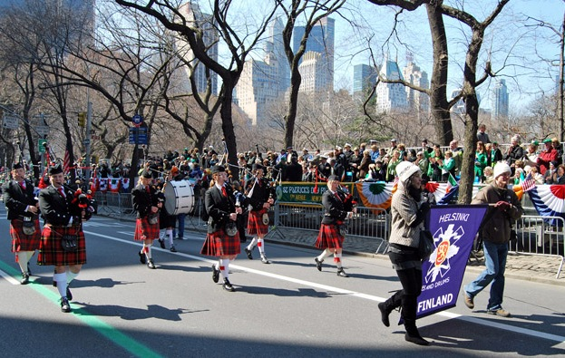
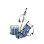

Welcome to the homepage of the Helsinki Pipes and Drums, the oldest, finest and only Pipe Band in Finland. We practise on Thursdays, from 6 p.m. to 8 p.m. at Lauttasaari church, Helsinki. Contact us for details.
About us
The band, which was previously known as the MacGregor Highlanders, was founded in 1991, and was at the time under the leadership of John MacGregor. The Band's second P/M was Gustav Henriksson, who succeeded John after he moved to Tallinn in September 1997. After Gustav moved to Sweden in September 2000, Annukka Matilainen took over as P/M.
We're probably the northernmost pipe band in the world!!!
At present the Band has 6 pipers and 3 drummers who perform in public. We welcome new students to join the band!
The uniform currently worn by the band is MacKintosh tartan kilts and ties, black Argyll jacket and ditto Glengarry. Black Watch is worn by the drummers.
Performances and competitions
Performances so far range from neighbourhood parades and performances to several appearances at the Kaustinen Folk Music Festival, performances in St. Patrick's Day parade 2009 and Long Island Highland Games, New York U.S.A., Oulu Highland Games for Eurosport sports channel and Tallinn, Estonia. We have also performed repeatedly at the Hamina Tattoo, a Finnish military tattoo held every two years in Hamina, a small town a few hours drive east of Helsinki.
As far as the competition scene goes, some of us have participated in the Copenhagen Winter Championships (CWC), held in February, and the Scandinavian Piping Championships in May, also held in Copenhagen. In SCOC 1999 HelPD took part in March grade IV and came in 3rd! We also took all in all 8 solo top3-positions! In SCOC 2000 only one piper took part and won March 2/4 Intermediate piping. 2002 World Pipe Band Championships and the 2003 European championships have also had players from our band, as members of other Scandinavian bands. 2005 Scandinavian Pipe Band Champions, PD1RE had two members from Helsinki Pipes and Drums when winning, D/Sgt Manne Laukkanen in the drum core and former pipe major Gustav Henriksson in the pipe core.
Order us to perform (Finland and the Baltic region)
The band can be ordered to perform in larger or smaller events. You can hire us in many configurations: as a band, as a quintet, trio, duo (for example a piper and a drummer) or a single solo piper. We always perform dressed in traditional Scottish attire. We play the traditional tunes like Black Bear, Scotland the Brave, Amazing Grace, Misty Mountains, Highland Cathedral and much much more. We also have a wide repertoire of faster up-tempo songs in hornpipe, jig, march, strathspey and reel styles.
In performances we can, besides playing, tell about Scottish piping culture, history of the bagpipes, teach some simple Scottish dances, lead a parade from one place to another...you are free to come up with ideas.
You can order us to perform in Finland and the Baltic Sea region by e-mailing to keikkamyynti(at)bagpipe.fi. (Replace the (at) with @).
P.S.
A frequently asked question:
"The piper
would only need to play a tune or two, can I get them at half the
price?".
No, regrettably not.
Reason: A performance
at your event by us actually consists of:
Years of dedicated practise and study without a nickel of income from it.
Expensive maintenance of instrument and uniform. Expensive, all parts have to be imported to Finland. Also teachers.
Practising to fulfill the particular wishes by You, the customer.
Tuning the instrument, dressing up and travelling to the place.
Actually performing at Your event, dressed sharp, in tune and in shape to play.
Travelling back, maintaining the instrument, undressing and going about our normal duties.
We are extremely grateful for your interest in us and will perform for you gladly. However, from the above list you get a picture of what goes behind the scenes, and why playing 2 tunes instead of 4 really does not make any difference to our workload.
Info
More information about the band can be received by sending e-mail
to
Drum Sergeant Manne Laukkanen (also
web-master), e-mail:info(at)bagpipe.fi
Thank You for Your interest!
